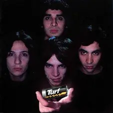
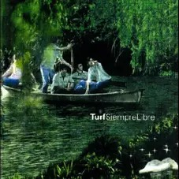
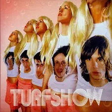
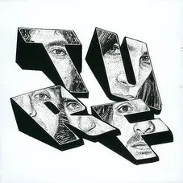
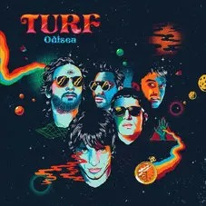
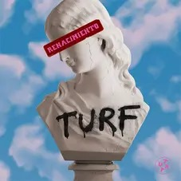

DISCOGRAFIA DE ESTUDIO
Una pila de vida (1997)

- La recta final
- Panorama
- Tarjeta postal
- Casanova
- Despiole generacional (feat. Charly García)
- Bristol (Café Concert)
- Crónica TV
- Viene llegando
- Juventurf
- Viajando en el jet-set
- Beatle-thone
Siempre Libre (1999)

- Siempre libre
- Me hace sentir
- El jugador
- Aterrizar
- Valle de la luna
- Esa luz (feat. Charly García)
- Piolines
- Tusam
- Mas loca que yo
- Fuera del mundo
- Miniturismo
- Valeria del mal
- Siempre libre II
Turfshow (2001)

- La emoción
- Chicas malas
- El centro musical
- Loco un poco
- Mambo
- Ranchera
- Cuatro personalidades
- Yo no me quiero casar, y ud.?
- Vade retro
- Vago
- Delfines
- La chispa de mi mente
Para mi, para vos (2004)

- Para mi, para vos
- No se llama amor
- Pasos al costado
- Oh, Dios!
- No necesito amarte
- Diario (Déjà Vu)
- Magia blanca
- Nos Vacían la Casa
- El Espectador
- Acaso No Se Da Cuenta Nadie?
- El Impuesto
- Vil Metal
- Quiero Seguir Así
Odisea (2017)

- Disconocidos
- Hablo solo
- Contacto
- No me podés cambiar
- Eclipse
- No robes mi tiempo
- Los freaks de la T.V
- Porque te quiero
- Los colores
- Desordenado
- Lo que tomo y lo que doy
- Finale
Renacimiento (2023)

- Intro
- Todo o nada
- Gatitas y ratones
- Sentimientos encontrados (ft.Los Auténticos Decadentes)
- Decímelo de una
- Malas decisiones
- Cuál?
- Es ser
- Alto trip
- Ahí voy
- Voy dejando atrás